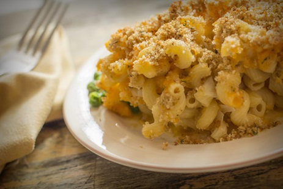

Mac and Cheese

Description
Non-traditional approach to a classic dish that hits the spot. Give this a try and you may never be willing to order Mac and Cheese from a restaurant again.
Ingredients
- 1 (8 ounce) package elbow macaroni
- 1 (8 ounce) package shredded sharp Cheddar cheese
- 1 (12 ounce) container small curd cottage cheese
- (8 ounce) container sour cream
- 1/4 cup grated Parmesan cheese
- salt and pepper to taste
- 1 cup dry bread crumbs
- 1/4 cup butter, melted
Steps
- Preheat oven to 350 degrees F (175 degrees C). Bring a large pot of lightly salted water to a boil, add pasta, and cook until done; drain.
- In 9x13 inch baking dish, stir together macaroni, shredded Cheddar cheese, cottage cheese, sour cream, Parmesan cheese, salt and pepper. In a small bowl, mix together bread crumbs and melted butter. Sprinkle topping over macaroni mixture.
- Bake 30 to 35 minutes, or until top is golden.